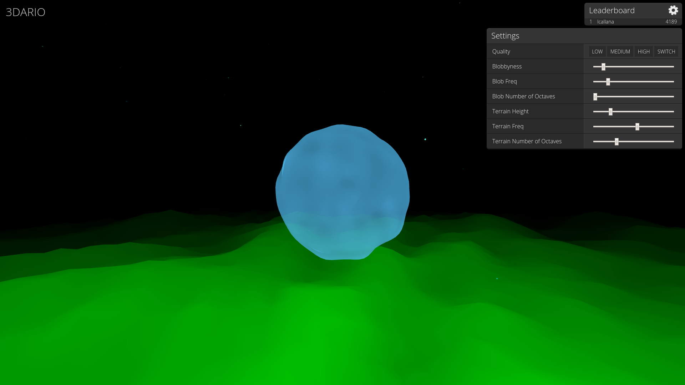

Terra is a shoot 'em up survival game developed by myself and two other Brown students, Hassan Sufi and Ujwal Ranganeni. The java-based engine was originally built by me, with features like parallax (made by Ujwal) and persistence/saving capabilities (made by Hassan) added on for this project.
This game was built for CS132: Modern Web Applications with Brown students Sam Johnson and Ryan Kalla. It plays like Agario except that players instead move in three dimensions. My portion of the project focused on player movement and UI design.
This fighting game was developed by four Brown students: Christian Giancarlo, Luke Priebe, Preston Law, and myself. Since players don't have control over the character's movement, much of the strategy is about character customization and input timing.